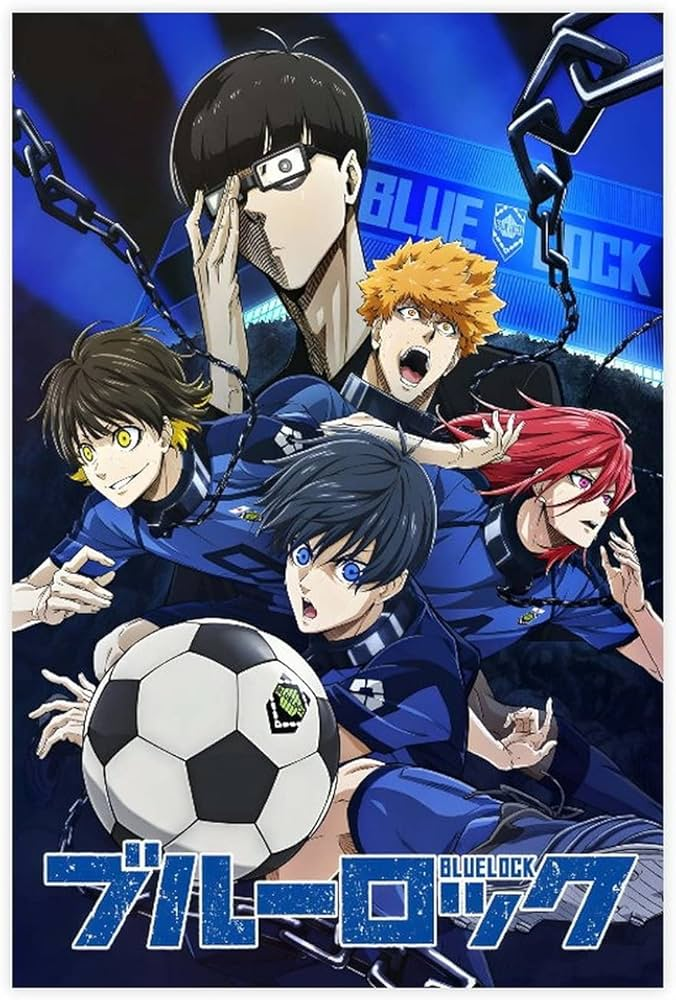

Reseña de "Blue Lock": El anime de fútbol que emocionará a los fanáticos
Fecha: 3 de noviembre de 2023
"Blue Lock" es un emocionante anime que se centra en el mundo del fútbol. La serie sigue la historia de un grupo de jóvenes talentosos que compiten por un lugar en el equipo nacional de Japón. Con una animación impresionante, personajes carismáticos y emocionantes partidos de fútbol, "Blue Lock" se ha convertido en un favorito de los fanáticos en todo el mundo.
Personajes Principales
Yoichi Isagi
Yoichi Isagi es un apasionado delantero que se destaca por su velocidad y capacidad para anotar goles. Su determinación y trabajo en equipo lo convierten en un líder en el campo.
Asahi Naruhaya
Asahi Naruhaya es un mediocampista versátil que destaca por su agilidad y habilidades de regate. Su visión de juego y precisión en los pases son cruciales para el equipo.
Gin Gagamaru
Gin Gagamaru es un defensor central robusto y fuerte que impone respeto en la defensa. Su capacidad para anticipar los movimientos del oponente lo convierte en una pieza fundamental en la retaguardia.
Gurimu Igarashi
Gurimu Igarashi es un talentoso mediocampista con una gran visión de juego y precisión en los pases. Su inteligencia en el campo es un activo invaluable para el equipo.
Hyoma Chigiri
Hyoma Chigiri es un defensor ágil y rápido que destaca por su habilidad para interceptar y recuperar el balón. Su capacidad para anticipar los movimientos del oponente es impresionante.
Jingo Raichi
Jingo Raichi es un delantero versátil con una gran habilidad para marcar goles. Su determinación en el área de penalti lo convierte en un goleador destacado.
Meguru Bachira
Meguru Bachira es un defensor fuerte y resistente con una gran habilidad para marcar enemigos en el campo. Su capacidad para bloquear tiros y cortar pases es esencial para la defensa del equipo.
Okuhito Iemon
Okuhito Iemon es un mediocampista versátil que destaca por su agilidad y capacidad para romper las líneas defensivas del oponente. Es conocido por su creatividad en el campo.
Rensuke Kunigami
Rensuke Kunigami es un delantero hábil que se destaca por su velocidad y capacidad para regatear a los defensores. Es un goleador nato y aporta una gran amenaza en el área de penalti.
Wataru Kuon
Wataru Kuon es un mediocampista con una visión excepcional del juego y una gran capacidad para distribuir el balón. Su habilidad táctica es esencial para mantener el control en el centro del campo.
Yudai Imamura
Yudai Imamura es un delantero rápido y ágil que destaca por su habilidad para desbordar a los defensores y crear oportunidades de gol. Es un jugador emocionante en el campo.
Ryosuke Kira
Ryosuke Kira es un defensor central fuerte y experimentado que lidera la línea defensiva con determinación. Su presencia física es crucial para mantener la portería a salvo.
Anri Teieri
Anri Teieri es un mediocampista versátil que puede desempeñar múltiples roles en el campo. Su capacidad para adaptarse a diversas situaciones lo convierte en un jugador versátil.
Hirotoshi Buratsuta
Hirotoshi Buratsuta es un delantero talentoso con una habilidad innata para marcar goles. Su instinto en el área de penalti lo convierte en un depredador del gol.
Jinpachi Ego
Jinpachi Ego es un defensor central robusto y fuerte que impone respeto en la defensa. Su capacidad para anticipar los movimientos del oponente es impresionante.
Yasumori Hoichi
Yasumori Hoichi es un mediocampista creativo con una gran visión de juego. Su capacidad para crear oportunidades de gol lo convierte en un jugador destacado en el centro del campo.
Shoei Barou
Shoei Barou es un delantero versátil que puede jugar en diversas posiciones de ataque. Su habilidad para desequilibrar a la defensa y crear oportunidades de gol es invaluable.
Zantetsu Tsurugi
Zantetsu Tsurugi es un defensor ágil y rápido que destaca por su capacidad para recuperar balones y anticipar los movimientos del oponente. Es un jugador importante en la retaguardia.
Reo Mikage
Reo Mikage es un mediocampista hábil con una gran precisión en los pases y una visión táctica impresionante. Su capacidad para orquestar el juego es fundamental para el equipo.
Seishiro Nagi
Seishiro Nagi es un delantero con una habilidad impresionante para regatear y marcar goles. Su capacidad para crear oportunidades de gol es una amenaza constante para los oponentes.
Rin Itoshi
Rin Itoshi es un mediocampista versátil que se destaca por su habilidad en el regate y la capacidad de crear oportunidades de gol. Su agilidad en el campo es impresionante.
Tabito Karasu
Tabito Karasu es un defensor central sólido que lidera la línea defensiva con determinación. Su habilidad para bloquear tiros y cortar pases es esencial para la defensa del equipo.
Ryusei Shido
Ryusei Shido es un delantero rápido y habilidoso que destaca por su capacidad para anotar goles espectaculares. Es un goleador talentoso en el área de penalti.
Ikki Niko
Ikki Niko es un mediocampista con una gran resistencia y capacidad para recuperar balones en el centro del campo. Su trabajo incansable es fundamental para el equipo.
Sae Itoshi
Sae Itoshi es un delantero versátil con una gran habilidad para regatear y marcar goles. Su capacidad para desequilibrar a la defensa es una amenaza constante en el área de penalti.
Oliver Aiku
Oliver Aiku es un mediocampista creativo con una visión excepcional del juego. Su habilidad para crear oportunidades de gol y distribuir el balón es esencial para el equipo.
En esta reseña, hemos destacado algunos de los personajes principales de "Blue Lock". Cada personaje aporta algo único a la serie y contribuye a la emoción y el drama en el campo de fútbol.